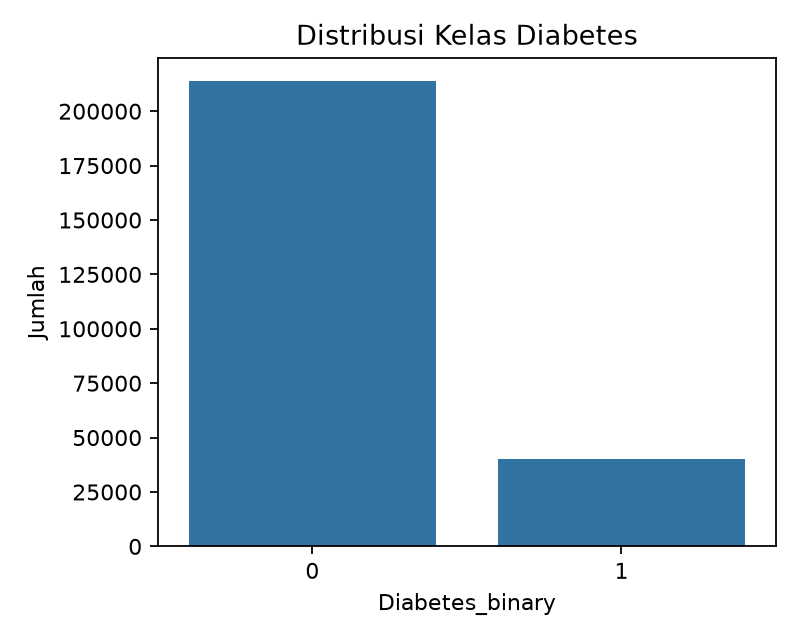
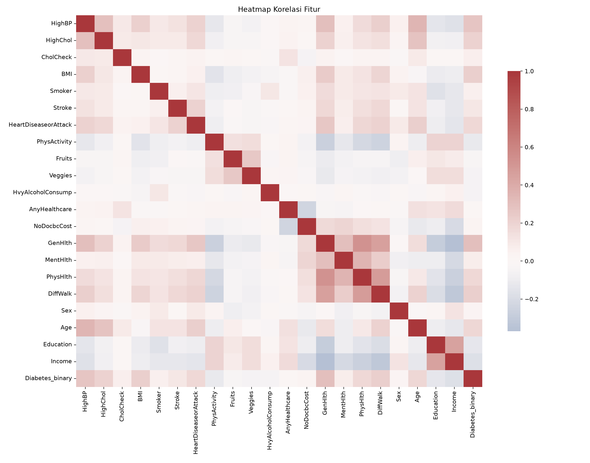
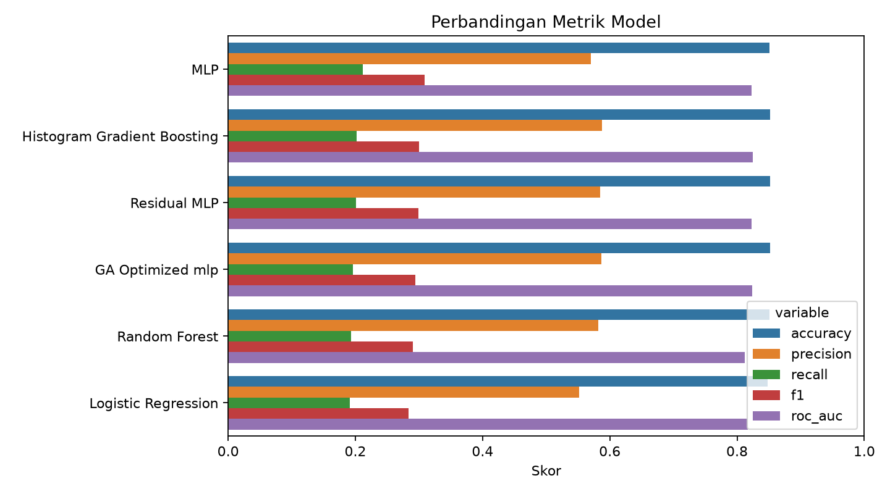
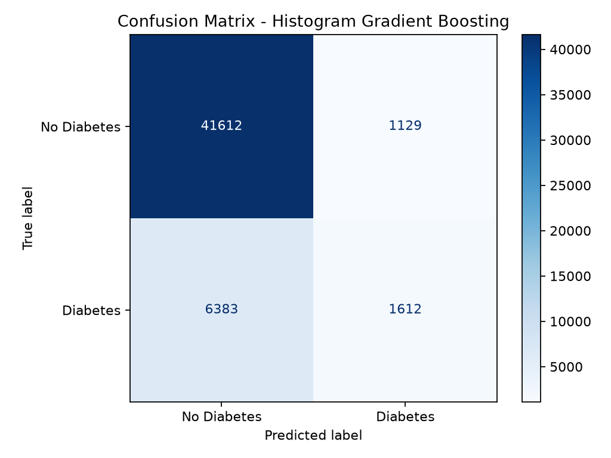
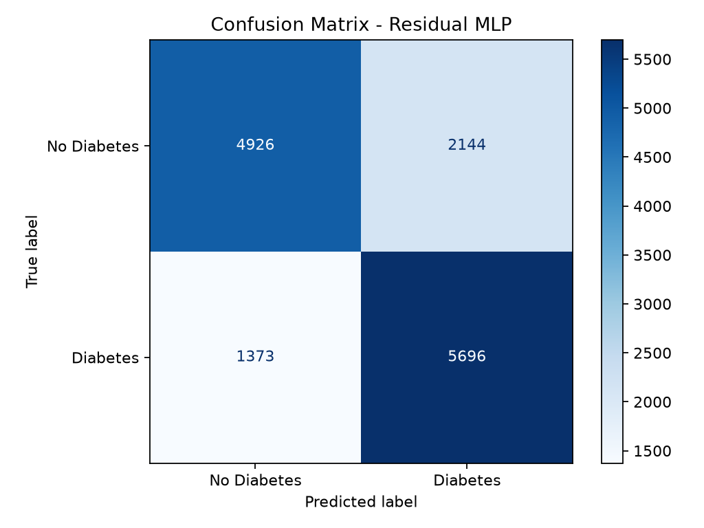
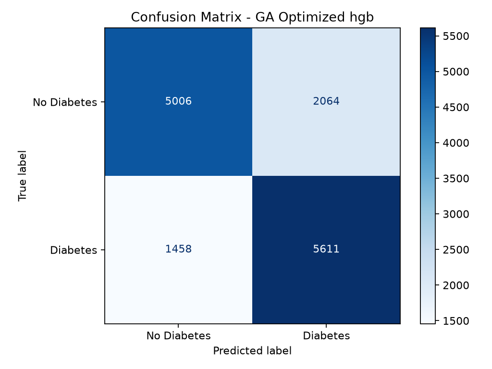
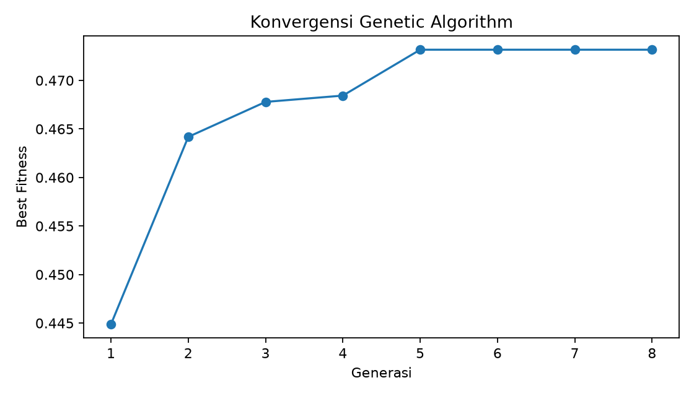
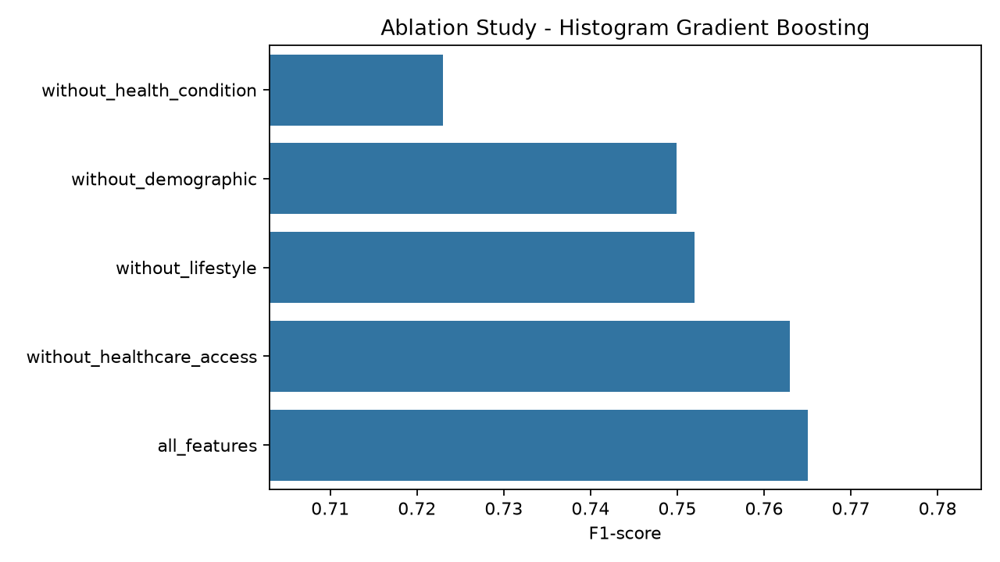
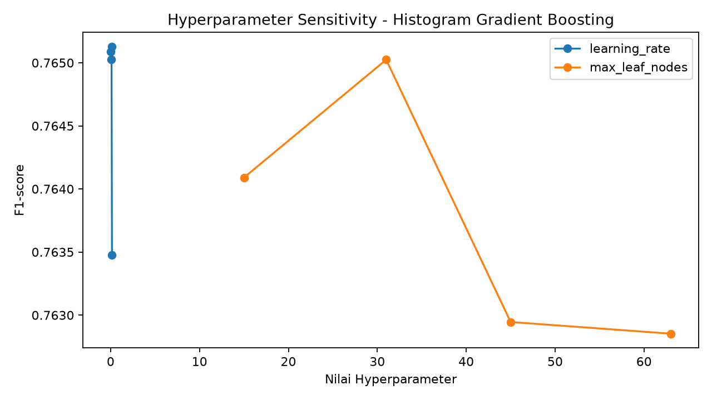
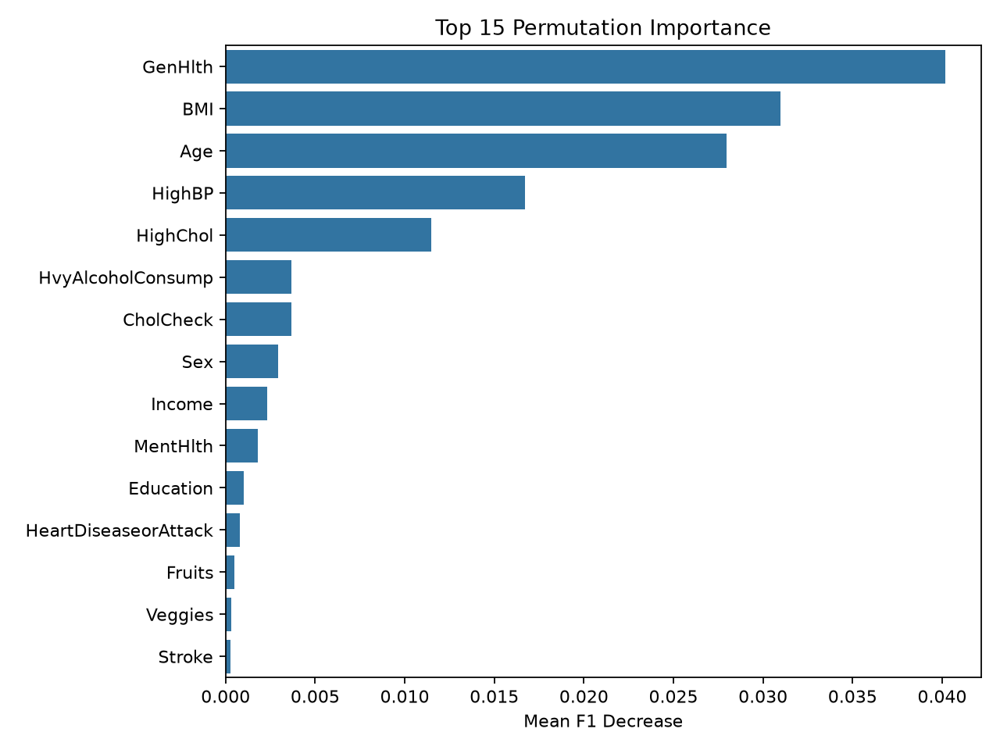

Abstrak—Diabetes merupakan salah satu penyakit kronis yang dapat dipengaruhi oleh faktor kesehatan, kebiasaan hidup, dan kondisi demografis. Penelitian ini membandingkan lima model prediksi diabetes pada dataset Diabetes Health Indicators BRFSS 2015, yaitu Logistic Regression, Random Forest, Histogram Gradient Boosting, Multilayer Perceptron (MLP), dan Residual MLP. Model terbaik kemudian dioptimasi menggunakan Genetic Algorithm (GA) untuk seleksi fitur dan penyesuaian hyperparameter. Dataset yang digunakan memiliki 70.692 data, 21 fitur input, 1 target biner, serta distribusi kelas yang seimbang antara diabetes dan non-diabetes. Hasil eksperimen menunjukkan bahwa Histogram Gradient Boosting memperoleh performa terbaik dengan accuracy 0,7544, F1-score 0,7650, dan ROC-AUC 0,8302. Residual MLP memiliki recall tertinggi sebesar 0,8058, tetapi F1-score-nya sedikit lebih rendah, yaitu 0,7641. Optimasi GA memilih 14 dari 21 fitur dan menghasilkan F1-score 0,7611, sedikit di bawah baseline Histogram Gradient Boosting. Ablation study memperlihatkan bahwa kelompok fitur kondisi kesehatan adalah kelompok paling berpengaruh, karena penghapusannya menurunkan F1-score dari 0,7650 menjadi 0,7230. Hasil permutation importance juga menempatkan GenHlth, BMI, Age, HighBP, dan HighChol sebagai fitur paling berpengaruh. Berdasarkan hasil tersebut, model machine learning klasik berbasis boosting masih menjadi pendekatan paling sesuai untuk data tabular ini.
Kata kunci—Diabetes, BRFSS, machine learning klasik, deep learning, Genetic Algorithm, Histogram Gradient Boosting, permutation importance.
Diabetes adalah penyakit metabolik kronis yang dapat berdampak pada kualitas hidup dan biaya kesehatan. Deteksi risiko diabetes secara awal penting dilakukan agar individu dengan risiko tinggi dapat memperoleh pemeriksaan lanjutan dan intervensi gaya hidup lebih cepat. Dalam praktiknya, data survei kesehatan sering digunakan sebagai sumber awal untuk mengamati hubungan antara kondisi kesehatan, kebiasaan hidup, akses layanan kesehatan, dan risiko penyakit.
Perkembangan kecerdasan komputasional membuka beberapa pendekatan untuk membangun model prediksi dari data kesehatan. Machine learning klasik banyak dipakai karena relatif cepat, cukup mudah diterapkan, dan sering kuat pada data tabular. Deep learning dapat memodelkan pola nonlinier yang lebih kompleks, tetapi biasanya membutuhkan data besar dan tuning yang lebih hati-hati. Sementara itu, evolutionary computation, seperti Genetic Algorithm, dapat digunakan untuk mencari kombinasi fitur atau hyperparameter yang lebih baik tanpa harus mencoba semua kemungkinan secara manual.
Penelitian ini menggunakan Diabetes Health Indicators Dataset dari BRFSS 2015. Dataset ini dipilih karena memiliki jumlah data yang cukup besar, fitur yang beragam, serta masalah klasifikasi biner yang relevan dengan skenario kesehatan masyarakat. Fokus penelitian bukan hanya mencari model dengan skor tertinggi, tetapi juga membandingkan karakteristik model dari sisi performa, waktu komputasi, stabilitas, interpretabilitas, dan kelayakan penggunaan pada data tabular kesehatan.
Kontribusi penelitian ini adalah sebagai berikut. Pertama, penelitian membandingkan tiga model machine learning klasik dan dua model deep learning pada dataset yang sama. Kedua, model terbaik baseline dioptimasi menggunakan GA untuk seleksi fitur dan hyperparameter. Ketiga, penelitian menambahkan eksperimen lanjutan berupa ablation study, hyperparameter sensitivity analysis, dan explainable AI menggunakan permutation importance. Keempat, hasil eksperimen dibahas secara kritis untuk melihat trade-off antara performa dan interpretabilitas.
Dataset yang digunakan adalah Diabetes Health Indicators Dataset dari Kaggle, yang bersumber dari Behavioral Risk Factor Surveillance System (BRFSS) 2015 CDC [1], [2]. File yang dipakai adalah diabetes_binary_5050split_health_indicators_BRFSS2015.csv. Dataset ini berisi data survei dengan target biner, yaitu responden non-diabetes dan responden diabetes.
Secara umum, dataset terdiri dari 70.692 baris dan 22 kolom. Dari jumlah tersebut, 21 kolom merupakan fitur input dan 1 kolom merupakan target, yaitu Diabetes_binary. Tidak ditemukan missing value pada file yang digunakan. Distribusi target ditunjukkan pada Tabel I dan divisualisasikan pada Gambar 1.
| Kelas | Makna | Jumlah data |
|---|---|---|
| 0 | Non-diabetes | 35.346 |
| 1 | Diabetes | 35.346 |

Fitur pada dataset dapat dibagi menjadi empat kelompok utama, yaitu kondisi kesehatan, perilaku atau gaya hidup, akses kesehatan, dan demografi. Pembagian kelompok fitur ditunjukkan pada Tabel II. Pembagian ini digunakan kembali pada ablation study untuk melihat kelompok fitur mana yang paling memengaruhi performa model.
| Kelompok | Fitur |
|---|---|
| Kondisi kesehatan | HighBP, HighChol, Stroke, HeartDiseaseorAttack, DiffWalk, GenHlth, MentHlth, PhysHlth |
| Perilaku/gaya hidup | BMI, Smoker, PhysActivity, Fruits, Veggies, HvyAlcoholConsump |
| Akses kesehatan | CholCheck, AnyHealthcare, NoDocbcCost |
| Demografi | Sex, Age, Education, Income |
Dataset ini berbentuk tabular dan sebagian besar fiturnya bersifat biner atau ordinal. Kondisi ini membuat model klasik seperti Logistic Regression, Random Forest, dan Gradient Boosting menjadi kandidat yang kuat. Deep learning tetap diuji agar dapat dibandingkan apakah arsitektur ANN memberi keuntungan pada dataset dengan jumlah fitur yang relatif kecil.

Gambar 2 memperlihatkan korelasi antar fitur. Korelasi tidak digunakan sebagai satu-satunya dasar pemilihan fitur, tetapi dapat memberi gambaran awal. Fitur seperti GenHlth, BMI, Age, HighBP, dan HighChol terlihat relevan dengan target, dan hal ini juga muncul kembali pada hasil permutation importance.
Masalah pada penelitian ini diformulasikan sebagai klasifikasi biner. Diberikan vektor fitur kesehatan responden x yang terdiri dari 21 atribut, model bertugas memprediksi label y dengan nilai 0 untuk non-diabetes dan 1 untuk diabetes. Tujuan utama model adalah memaksimalkan kemampuan klasifikasi pada data uji, terutama berdasarkan F1-score dan ROC-AUC.
F1-score dipilih karena menggabungkan precision dan recall. Pada konteks prediksi diabetes, recall penting karena model diharapkan tidak terlalu banyak melewatkan responden yang berisiko. Namun precision juga tetap penting agar model tidak terlalu banyak memberi peringatan salah. ROC-AUC digunakan untuk melihat kemampuan model memisahkan dua kelas pada berbagai threshold.
Eksperimen dilakukan melalui beberapa tahap. Tahap pertama adalah membaca dataset dan memisahkan fitur dengan target. Tahap kedua adalah membagi data menjadi training set dan testing set dengan stratified split 80:20. Stratifikasi digunakan agar proporsi kelas pada training set dan testing set tetap seimbang. Tahap ketiga adalah melakukan preprocessing dengan standardisasi fitur menggunakan StandardScaler. Tahap keempat adalah melatih lima model baseline. Tahap kelima adalah memilih model baseline terbaik dan mengoptimalkannya dengan GA. Tahap terakhir adalah evaluasi, interpretasi, dan eksperimen lanjutan.
Tiga model machine learning klasik yang digunakan adalah Logistic Regression, Random Forest, dan Histogram Gradient Boosting. Logistic Regression dipakai sebagai baseline linear yang sederhana dan cepat. Random Forest digunakan sebagai ensemble berbasis bagging yang menggabungkan banyak decision tree. Histogram Gradient Boosting digunakan sebagai ensemble boosting yang membangun model secara bertahap untuk memperbaiki kesalahan prediksi dari iterasi sebelumnya [3], [4].
Model klasik dipilih karena dataset berbentuk tabular. Pada banyak kasus tabular, model tree-based ensemble sering memberi hasil yang kuat tanpa arsitektur yang rumit. Selain itu, model klasik biasanya lebih mudah dianalisis dari sisi waktu training dan interpretasi fitur.
Dua model ANN/deep learning yang digunakan adalah MLP dan Residual MLP. MLP terdiri dari beberapa lapisan fully connected dengan aktivasi ReLU, batch normalization, dan dropout. Residual MLP menambahkan blok residual agar informasi dari layer sebelumnya tetap dapat diteruskan ke layer berikutnya. Pendekatan residual awalnya banyak digunakan pada deep neural network untuk mengurangi masalah degradasi performa pada jaringan yang lebih dalam [5].
Pada implementasi utama, model deep learning menggunakan PyTorch. Jika PyTorch tidak tersedia di komputer pengguna, kode menyediakan fallback menggunakan MLPClassifier dari scikit-learn agar eksperimen tetap dapat dijalankan. Fallback ini membantu reproduksibilitas, meskipun hasil akhir dapat sedikit berbeda ketika training dilakukan dengan backend yang berbeda.
Genetic Algorithm digunakan setelah model baseline terbaik diperoleh. Pada eksperimen ini, GA mengoptimasi dua hal, yaitu seleksi fitur dan hyperparameter. Setiap individu pada populasi membawa representasi mask fitur dan nilai hyperparameter. Individu dievaluasi dengan fungsi fitness yang menggabungkan F1-score, ROC-AUC, dan penalti kecil untuk jumlah fitur yang digunakan.
Proses GA terdiri dari inisialisasi populasi, evaluasi fitness, seleksi individu terbaik, crossover, mutasi, dan pembentukan generasi baru. Proses ini diulang selama beberapa generasi. Model terbaik dari GA kemudian dilatih ulang pada training set dan dievaluasi pada testing set. Dengan cara ini, hasil GA tidak hanya dilihat dari fitness internal, tetapi juga dari performa pada data uji.
Metrik yang digunakan adalah accuracy, precision, recall, F1-score, ROC-AUC, waktu training, dan waktu inference. Accuracy tetap dicatat karena dataset seimbang. Precision dan recall dipakai untuk melihat trade-off antara kesalahan false positive dan false negative. F1-score digunakan sebagai metrik utama karena merangkum precision dan recall. ROC-AUC digunakan untuk mengukur kemampuan pemisahan kelas berdasarkan skor probabilitas.
Hasil evaluasi lima model baseline dan satu model hasil optimasi GA ditunjukkan pada Tabel III. Visualisasi perbandingan metrik ditampilkan pada Gambar 3. Secara umum, selisih performa antar model tidak terlalu besar, tetapi Histogram Gradient Boosting menjadi model dengan F1-score dan ROC-AUC tertinggi.
| Model | Accuracy | Precision | Recall | F1 | ROC-AUC | Training |
|---|---|---|---|---|---|---|
| Histogram Gradient Boosting | 0,7544 | 0,7334 | 0,7995 | 0,7650 | 0,8302 | 1,83s |
| Residual MLP | 0,7513 | 0,7265 | 0,8058 | 0,7641 | 0,8289 | 4,00s |
| MLP | 0,7516 | 0,7319 | 0,7940 | 0,7617 | 0,8278 | 1,15s |
| GA Optimized HGB | 0,7509 | 0,7311 | 0,7937 | 0,7611 | 0,8276 | 0,54s |
| Random Forest | 0,7443 | 0,7253 | 0,7865 | 0,7547 | 0,8241 | 0,86s |
| Logistic Regression | 0,7458 | 0,7372 | 0,7639 | 0,7503 | 0,8232 | 0,03s |

Histogram Gradient Boosting memperoleh F1-score 0,7650 dan ROC-AUC 0,8302. Hasil ini menjadikannya model terbaik pada eksperimen ini. Model boosting cocok untuk dataset ini karena dapat menangani pola nonlinier dan interaksi antar fitur tanpa memerlukan arsitektur yang kompleks.
Residual MLP memiliki recall tertinggi, yaitu 0,8058. Artinya, model ini lebih banyak menangkap kelas diabetes dibanding model lain. Namun precision-nya hanya 0,7265, lebih rendah dibanding Histogram Gradient Boosting dan Logistic Regression. Dalam konteks screening, recall tinggi dapat menguntungkan karena kasus positif lebih sedikit terlewat. Akan tetapi, precision yang lebih rendah berarti jumlah false positive cenderung meningkat.
Logistic Regression memiliki training time paling rendah, yaitu sekitar 0,03 detik, dan precision tertinggi sebesar 0,7372. Model ini menarik sebagai baseline karena sederhana dan cepat. Namun F1-score 0,7503 menunjukkan bahwa pendekatan linear belum cukup menangkap pola data sebaik model ensemble.
Confusion matrix digunakan untuk melihat pola kesalahan prediksi. Gambar 4 menunjukkan confusion matrix Histogram Gradient Boosting sebagai model baseline terbaik. Gambar 5 menunjukkan confusion matrix Residual MLP sebagai model deep learning terbaik berdasarkan F1-score dan recall. Gambar 6 menunjukkan confusion matrix model hasil optimasi GA.



Dari ketiga confusion matrix, dapat dilihat bahwa model dengan recall lebih tinggi cenderung mengurangi false negative, tetapi berpotensi meningkatkan false positive. Hal ini sesuai dengan hasil numerik pada Tabel III. Untuk aplikasi screening awal, pola seperti ini perlu disesuaikan dengan tujuan sistem. Jika tujuan utama adalah menangkap sebanyak mungkin individu berisiko, recall tinggi lebih diutamakan. Jika tujuan utama adalah mengurangi alarm palsu, precision menjadi lebih penting.
Model baseline terbaik, yaitu Histogram Gradient Boosting, dipilih untuk dioptimasi menggunakan GA. Konfigurasi terbaik yang ditemukan GA ditunjukkan pada Tabel IV. GA memilih 14 fitur dari total 21 fitur. Fitur yang dipilih adalah HighBP, HighChol, BMI, Smoker, Stroke, HeartDiseaseorAttack, HvyAlcoholConsump, AnyHealthcare, GenHlth, PhysHlth, Sex, Age, Education, dan Income.
| Komponen | Nilai |
|---|---|
| Model | Histogram Gradient Boosting |
| Learning rate | 0,0536 |
| Max iterations | 160 |
| Max leaf nodes | 45 |
| L2 regularization | 0,0420 |
| Fitness terbaik | 0,7702 |

Kurva pada Gambar 7 memperlihatkan perubahan fitness terbaik selama generasi GA. Hasil akhir GA memiliki F1-score 0,7611 dan ROC-AUC 0,8276 pada test set. Nilai tersebut sedikit lebih rendah dibanding baseline Histogram Gradient Boosting. Dengan demikian, GA pada eksperimen ini lebih berhasil mengurangi jumlah fitur daripada meningkatkan performa akhir.
Hasil ini tidak berarti GA gagal secara konsep. Ruang pencarian fitur dan hyperparameter sangat luas, sedangkan jumlah generasi dan populasi yang digunakan masih terbatas. Jika populasi, generasi, atau strategi fitness diperbesar, GA mungkin menemukan konfigurasi yang lebih baik. Namun dari eksperimen yang dilakukan, baseline Histogram Gradient Boosting tetap lebih unggul dari sisi F1-score dan ROC-AUC.
Ablation study dilakukan untuk melihat dampak penghapusan kelompok fitur. Model yang dipakai adalah Histogram Gradient Boosting. Hasilnya ditunjukkan pada Tabel V dan Gambar 8.
| Setting | Jumlah fitur | F1-score | Delta F1 |
|---|---|---|---|
| Semua fitur | 21 | 0,7650 | 0,0000 |
| Tanpa akses kesehatan | 18 | 0,7630 | -0,0021 |
| Tanpa gaya hidup | 15 | 0,7520 | -0,0130 |
| Tanpa demografi | 17 | 0,7499 | -0,0151 |
| Tanpa kondisi kesehatan | 13 | 0,7230 | -0,0421 |

Penghapusan fitur kondisi kesehatan memberi penurunan terbesar. F1-score turun dari 0,7650 menjadi 0,7230. Artinya, fitur seperti tekanan darah tinggi, kolesterol tinggi, kondisi kesehatan umum, dan riwayat penyakit menjadi bagian penting dalam prediksi diabetes. Sebaliknya, penghapusan fitur akses kesehatan hanya menurunkan F1-score sebesar 0,0021.
Hyperparameter sensitivity analysis dilakukan dengan mengubah nilai learning_rate dan max_leaf_nodes pada Histogram Gradient Boosting. Hasil ringkas ditunjukkan pada Tabel VI dan visualisasinya pada Gambar 9.
| Parameter | Nilai terbaik | F1-score |
|---|---|---|
learning_rate |
0,10 | 0,7651 |
max_leaf_nodes |
31 | 0,7650 |

Perubahan learning_rate dari 0,03 sampai 0,10 tidak mengubah performa secara besar. F1-score terbaik muncul pada learning_rate 0,10 dengan nilai 0,7651. Pada max_leaf_nodes, nilai 31 memberikan F1-score 0,7650. Nilai yang lebih besar tidak memberi kenaikan berarti dan dapat menambah kompleksitas model.
Explainable AI dilakukan dengan permutation importance. Metode ini mengukur penurunan skor ketika nilai sebuah fitur diacak. Jika pengacakan suatu fitur menyebabkan skor turun besar, fitur tersebut dianggap penting bagi model. Hasil lima fitur teratas ditunjukkan pada Tabel VII dan Gambar 10.
| Peringkat | Fitur | Importance mean |
|---|---|---|
| 1 | GenHlth |
0,0402 |
| 2 | BMI |
0,0310 |
| 3 | Age |
0,0280 |
| 4 | HighBP |
0,0167 |
| 5 | HighChol |
0,0115 |

Fitur paling penting yang muncul pada Tabel VII masih sesuai dengan konteks medis. GenHlth menggambarkan kondisi kesehatan umum responden. BMI, Age, HighBP, dan HighChol juga berkaitan dengan risiko diabetes. Hasil ini membuat model lebih mudah dipahami karena fitur yang dianggap penting oleh model masih sejalan dengan pengetahuan domain.
Cross-dataset evaluation belum dilakukan karena data yang tersedia pada proyek ini hanya satu file, yaitu BRFSS 2015 binary 50:50 split. Untuk melakukan evaluasi lintas dataset secara valid, perlu dataset tambahan dengan distribusi berbeda, misalnya versi BRFSS yang tidak diseimbangkan atau data dari tahun lain. Tanpa dataset tambahan, klaim generalisasi lintas dataset belum dapat dibuat.
Hasil eksperimen memperlihatkan bahwa model klasik, khususnya Histogram Gradient Boosting, masih sangat kuat untuk data tabular dengan jumlah fitur terbatas. Dataset ini memiliki 21 fitur, banyak di antaranya biner atau ordinal. Pada kondisi seperti ini, model tree-based ensemble dapat langsung memanfaatkan struktur data tanpa perlu representasi fitur yang rumit.
Deep learning tidak unggul pada eksperimen ini, meskipun hasilnya dekat dengan model terbaik. Residual MLP memperoleh F1-score 0,7641, hanya terpaut 0,0009 dari Histogram Gradient Boosting. Namun waktu training Residual MLP lebih lama, yaitu 4,00 detik dibanding 1,83 detik pada Histogram Gradient Boosting. Perbedaan ini tidak besar pada skala dataset saat ini, tetapi dapat menjadi pertimbangan jika eksperimen diperluas.
Pada skenario screening kesehatan, recall sering menjadi perhatian karena false negative berarti responden diabetes tidak terdeteksi oleh model. Residual MLP memiliki recall tertinggi, tetapi precision-nya lebih rendah. Histogram Gradient Boosting memberikan keseimbangan yang lebih baik karena F1-score dan ROC-AUC tertinggi. Logistic Regression lebih sederhana dan cepat, tetapi performanya lebih rendah.
Dari sisi interpretabilitas, Logistic Regression biasanya lebih mudah dianalisis karena bobot fitur dapat dibaca secara langsung. Namun pada penelitian ini, Histogram Gradient Boosting tetap dapat dianalisis menggunakan permutation importance. Dengan demikian, model terbaik masih dapat diberi penjelasan fitur, meskipun tidak sesederhana model linear.
Waktu training menunjukkan perbedaan karakter antar model. Logistic Regression paling cepat dengan waktu 0,03 detik. Random Forest membutuhkan 0,86 detik, Histogram Gradient Boosting 1,83 detik, MLP 1,15 detik, dan Residual MLP 4,00 detik. Untuk dataset berukuran 70.692 baris, semua model masih dapat dijalankan dengan nyaman. Namun untuk data yang jauh lebih besar, model dengan waktu training lebih lama perlu dipertimbangkan ulang.
GA menambah biaya komputasi karena harus melatih model berkali-kali pada banyak individu dan generasi. Biaya ini dapat diterima jika tujuan eksperimen adalah mencari subset fitur atau konfigurasi hyperparameter. Namun untuk sistem produksi, GA tidak perlu dijalankan setiap kali prediksi dibuat. GA cukup dipakai pada tahap pelatihan dan pencarian konfigurasi.
Model seperti Histogram Gradient Boosting dapat digunakan sebagai alat bantu awal untuk mengidentifikasi responden yang berisiko diabetes berdasarkan indikator survei. Namun hasil prediksi tidak dapat dianggap sebagai diagnosis medis. Model hanya membaca pola statistik dari data survei, sedangkan diagnosis tetap memerlukan pemeriksaan klinis dan keputusan tenaga kesehatan.
Dalam penerapan nyata, threshold prediksi perlu disesuaikan. Jika sistem digunakan untuk screening awal, threshold dapat dibuat lebih sensitif agar recall meningkat. Jika sistem digunakan untuk memprioritaskan pemeriksaan lanjutan dengan sumber daya terbatas, precision perlu lebih diperhatikan. Keputusan ini tidak bisa hanya ditentukan oleh skor model, tetapi juga oleh tujuan penggunaan dan risiko kesalahan.
Penelitian ini membandingkan tiga model machine learning klasik, dua model deep learning, dan satu optimasi berbasis GA pada dataset Diabetes Health Indicators BRFSS 2015. Hasil utama menunjukkan bahwa Histogram Gradient Boosting menjadi model terbaik dengan accuracy 0,7544, F1-score 0,7650, dan ROC-AUC 0,8302. Residual MLP memberikan recall tertinggi sebesar 0,8058, tetapi F1-score-nya sedikit lebih rendah, yaitu 0,7641.
GA memilih 14 dari 21 fitur dan menghasilkan F1-score 0,7611 serta ROC-AUC 0,8276. Hasil ini menunjukkan bahwa GA dapat mengurangi jumlah fitur tanpa penurunan performa yang besar, tetapi belum berhasil melampaui baseline Histogram Gradient Boosting. Ablation study memperlihatkan bahwa kelompok fitur kondisi kesehatan paling penting, dengan penurunan F1-score sebesar 0,0421 ketika kelompok fitur tersebut dihapus.
Permutation importance menempatkan GenHlth, BMI, Age, HighBP, dan HighChol sebagai fitur paling berpengaruh. Secara praktis, hasil ini mendukung penggunaan model klasik berbasis boosting untuk data tabular kesehatan. Untuk penelitian lanjutan, eksperimen dapat diperluas dengan cross-dataset evaluation, pencarian hyperparameter yang lebih besar, dan metode explainable AI tambahan seperti SHAP atau LIME.